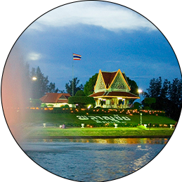

บึงพลาญชัย
ณ ที่จังหวัดร้อยเอ็ด
บึงพลาญชัย ตั้งอยู่บริเวณกลางเมืองร้อยเอ็ด ตำบลในเมือง อำเภอเมือง จังหวัดร้อยเอ็ด บึงพลาญชัย มีลักษณะเป็นเกาะอยู่กลางบึงน้ำ ขนาดใหญ่ มีเนื้อที่ประมาณ 200,000 ตารางเมตร บึงพลาญชัยเป็นสถานที่พักผ่อนหย่อนใจ ตกแต่งประดับประดาเป็นสวนไม้ดอก ขนาดใหญ่ รวมทั้งมีการประดับตกแต่งด้วยพันธุ์ไม้ต่าง ๆ จึงเกิดความร่มรื่นสบายตา และในบึงน้ำมีปลาชนิดต่าง ๆ หลากหลายพันธุ์ อีกทั้งยังมีเรือจักรยานน้ำและเรือพายไว้บริการประชาชนให้พายเล่นในบึงแห่งนี้นอกจากนี้ บึงพลาญชัย ยังใช้เป็นสถานที่จัดงาน เทศกาลของจังหวัด รวมไปถึงการจัดมหรสพต่าง ๆ ภายในจังหวัดอีกด้วย อาจกล่าวได้ว่า บึงพลาญชัย เป็นสถานที่ที่เป็นสัญลักษณ์ ของจังหวัดร้อยเอ็ด